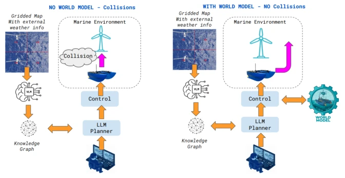
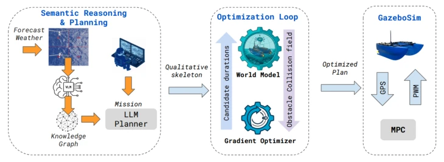
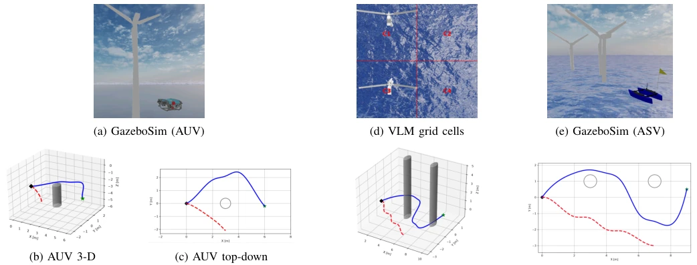

This paper equips LLMs with "physical external aids", attempting to solve the pain points of large models not understanding how to operate bulldozers and easily crashing into windmills. The authors developed a hybrid world model, grounded in physics formulas with neural networks filling gaps, enabling the LLM to manage only "what to do" while the world model manages "how long to do it". Validated on dual AUV and ASV platforms, the ASV can also save on expensive sensors by relying on satellite maps. Although simulations ran successfully and the zero collision rate is outstanding, if the LLM skeleton is chosen incorrectly, the optimizer cannot save it. This counts as adding some "common sense" to embodied intelligence, but it still falls short of true intelligence, after all, topological errors remain a fatal flaw.
Large Language Models (LLMs) excel at decomposing natural language tasks into action sequences [1], but exposed fatal flaws in marine environments: lack of understanding of physics. LLMs cannot predict propeller lag, hydrodynamic coupling, or current drift, leading to seemingly reasonable instructions potentially causing robots to collide with turbine towers [4]. LeCun pointed out that predicting tokens is not the correct goal for physical reasoning; instead, future state representations should be learned [4]. Ha and Schmidhuber proposed that agents should imagine consequences through compact models before acting [5]. Existing work such as SayCan grounds LLM outputs to affordances but does not insert a differentiable physics model between the LLM and the robot [2]. This paper aims to solve the problem of LLM planning lacking physical constraints, ensuring safe navigation for AUVs and ASVs in complex sea conditions.

Fig. 1: Why an LLM planner needs a world model (ASV variant shown; the same contrast holds for the AUV, without the VLM stage). Without grounding (left), the LLM’s plan drifts into the turbine tower; with the world model (right), the same plan receives physically feasible step durations and reaches the goal collision-free. The ASV’s inputs additionally include a gridded map classified by a vision-language model and enriched with forecast wind/current/wave data (Section IV-F); the AUV instead uses pre-dive obstacle boxes (Section III), with no VLM stage.
The overall pipeline is divided into three stages: planning, optimization, and execution. The LLM is called only once, outputting a macro action skeleton without time parameters. The core innovation lies in the Physics-Grounded world model: providing physical constraints via an analytical Fossen simulator, with a residual MLP superimposed to correct errors, balancing accuracy and differentiability. Subsequently, a three-stage gradient optimizer (scale search, coordinate descent, Adam) determines the duration of each step, minimizing collision cost. The execution layer adopts MPC-style closed-loop replanning, introducing a Trust-Region Guard to prevent planning collapse caused by state drift. For ASVs, VLM-assisted semantic mapping was also designed, utilizing satellite maps, nautical charts, and API data to extract obstacles, replacing expensive sensors to achieve low-cost navigation.

Fig. 2: System architecture (ASV variant shown; the AUV variant is structurally identical). Planning: for the ASV, a satellite/chart image is tiled and classified by a vision-language model and enriched with live wind/current/wave data, merged into obstacle bounding boxes (Section IV-F); the AUV uses pre-dive structural drawings instead. The LLM is invoked once, returning a macro-action skeleton with no timing information. Optimization loop: the gradient optimizer proposes step durations; the world model scores each rollout against the obstacle collision field across three phases (scale search, coordinate descent, Adam) until a collision-free plan emerges. Execution: the plan runs on GazeboSim’s real autopilot stack; the AUV loop reads DVL where the ASV reads GPS, after which MPC re-optimi
5 benchmark tasks (e.g., obstacle avoidance, path following) were conducted on each of the AUV and ASV platforms. Comparison baselines include No World Model (No WM) and uniform scaling. Results show that the proposed method achieved 100% task success rate and zero collisions in both analytical simulation and GazeboSim, while the No World Model baseline had a very high collision rate. After transfer to GazeboSim and fine-tuning, the target distance error for ASV and AUV decreased by 70-82% and 93% respectively. ASV's VLM map extraction achieved 96% navigability accuracy on 180 samples. Ablation experiments indicate that the Trust-Region Guard is crucial for AUV extreme tasks (100% vs 10% success rate).

Fig. 3: GazeboSim renders and resulting trajectories, one trial of ten per platform (Section V-C). (a-c) AUV (avoid_turbine): render near the turbine foundation (a), with 3-D (b) and top-down (c) trajectories. (e-g) ASV (avoid_tower, two turbines): render of the scene (e), with 3-D (f) and top-down (g) trajectories. In both, the world- model planner (blue, solid) detours around the obstacle(s) and reaches the goal (green star) - the ASV via a turn-forward-turn sequence, since no direct lateral detour is possible - while the ungrounded baseline (red, dashed) drifts off course and never arrives. (d) Semantic-map input (ASV): a gridded satellite tile as classified by the VLM pipeline (Section IV-F), the source of the ASV’s obstacle boxes in place of a pre-dive survey. Circles/cylinders mark t